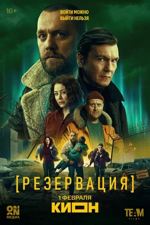
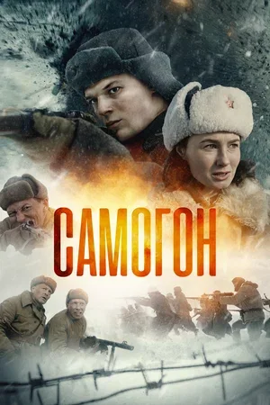
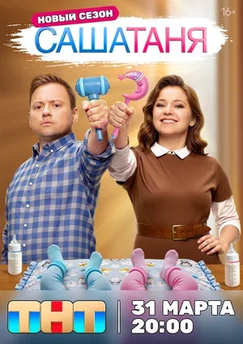
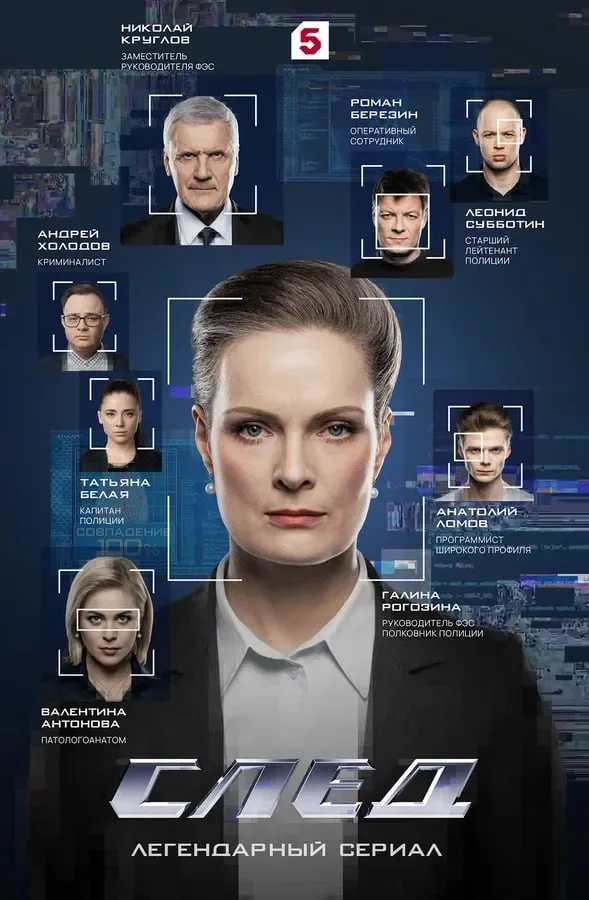
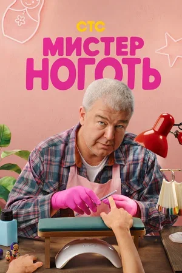
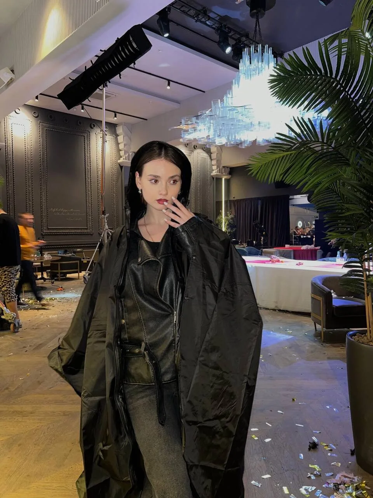

ПРОЕКТ / 2025
ПРОЕКТ / 202501 / 2025
Ревизоры
Нина ↗

01 / VIDEO PORTRAIT
Видео-визитка / 01:34
Архивная запись: возраст в видео указан на момент съёмки. Полная нарезка — по запросу ↗
02 / SELECTED ROLES
Шесть проектов.
Шесть экранных образов.
ПРОЕКТ / 2025Нина ↗

ПРОЕКТ / 2026Подруга Маши ↗

ПРОЕКТ / 2025Снайпер ↗

ПРОЕКТ / 2025Сотрудница пункта ↗

ПРОЕКТ / 2025Светлана Устинова ↗

ПРОЕКТ / 2025Клиентка в салоне ↗
03 / FILMOGRAPHY
15 проектов в кино и сериалах / 2023–2026
Нина
Роль уточняется
Вероника
Официантка
Клиентка в салоне
Снайпер
Сотрудница пункта
Подруга Маши
Девушка Никиты
Ученица лагеря
Модель
Модель
Светлана Устинова
Медсестра
Натурщица
Годы и роли — по актёрскому портфолио. Актуальные даты выхода уточняются.

MUSIC VIDEO / 2025
Диана Арбенина · участие в клипе
04 / CASTING PROFILE
Москва. Готова к командировкам.
Английский · немецкий
Гитара · фортепиано
Вокал: эстрада, хип-хоп, рэп
Брейк-данс · джаз · вальс
Арабские · бальные
Бег · йога · фигурное катание
Верховая езда · командные виды спорта
Водительские права категории B
05 / EDUCATION
Мастерская И. А. Кокорина
Мастерская С. В. Казакова
06 / NEXT STORY
Пришлите синопсис, даты и город съёмки.
eeklera.advertising52@gmail.com